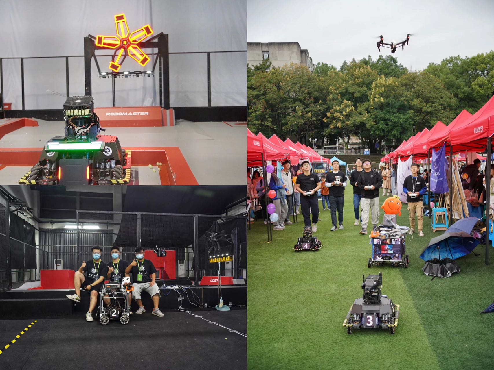
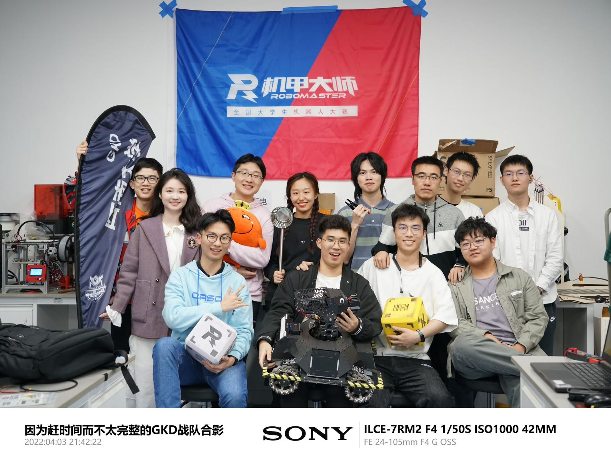
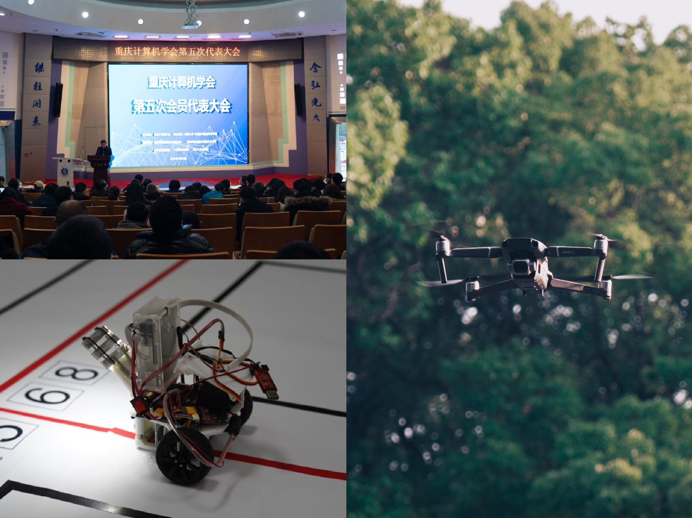
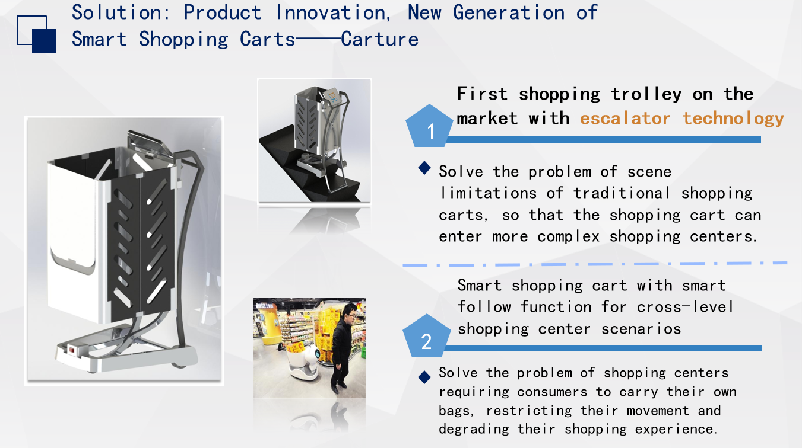
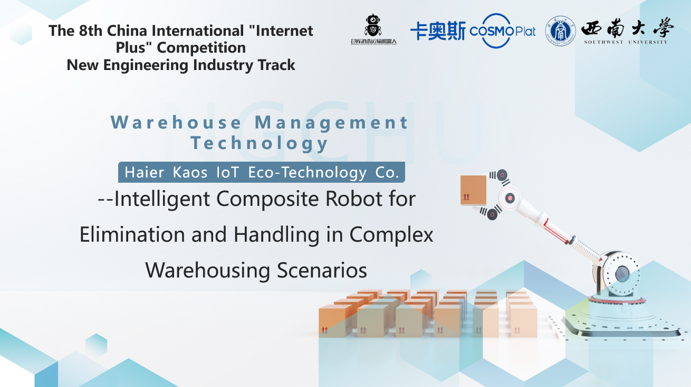

Hello, it's a pleasure to have you visit my personal homepage 👋!
I am a first-year graduate student pursuing a Master's degree in Electrical and Electron Engineering at the School of Engineering at University of Western Australia. I completed my undergraduate study in automation at Southwest University in 2023 Fall.My research interests include Robotics, Embedded Development and Artificial Intelligence.
Recently, I am study at UWA, and everything is totally different. So I'm trying to adjust to a new life and seeking for some new opportunities.
I was engaged in the development of robots related to the DJI RoboMaster competition at the GKD Robotics Innovation Laboratory of Southwest University during 2020-2023.I have also presided over many innovation and entrepreneurship projects, such as robot public welfare education and disinfecting storage robots, etc., responsible for design and coordination.
email: 23932849@student.uwa.edu.au or wangsenmu887@gmail.com
Related Works

Robomaster Robots development
2021-2023 | Developed with GKD Robotics Innovation Laboratory.
My team and I have completed the development of mechanical, electrical and vision algorithms for a variety of robots for the Robomaster robotics competition.One year as a member of the electrical and mechanical team and two years as a project manager.

GKD Robotics Innovation Laboratory
2021-2023 | The Team was set up by the student totally at 2021 in Westa College, after many setbacks and difficulties,I rebuild it at 2022 Fall in Computer and Information Science College. It is now the most award-winning and most productive science and engineering undergraduate laboratory in SWU.
About the photo: A group photo of some members of the GKD Robotics Innovation Team taken in the lab at Westa College.

FIRST --- More Than Robots
2013-Now |From FLL(FIRST LEGO League) to FTC(FIRST Tech Challenge ) It's been with me my whole student life.
2017 FTC Tongji Invitational Runner-up
2018 FTC Beijing Qualcomm Special Competition First Prize
2021 FTC China Finals Staff
2022 FTC Competition Team Coach
2023 FTC China Playoffs Machine Checker

Student Council Photography Adviser
2019-2022 | As an amateur photographer, I serve my school and college organisations while juggling my hobby.I am often asked to take part in the photographic documentation of some important conferences and make tweets to be published on the official website (e.g. Annual Meeting of Chongqing Computer Association Sichuan and Chongqing University Students' Science and Technology Festival, etc.).I also serve as DJI's campus ambassador, responsible for promoting and publicising DJI's drone activities, and I am also good at aerial photography!

Carture - Smart Shopping Cart
With indoor navigation, autonomous obstacle avoidance and escalator ride, anti-theft protection, and intelligent following. Using UWB-based high-precision positioning system and Intelligent following technique based on local dynamic path planning

Warehouse Management Technology
Developed in the context of Covid-19, with a McNamee wheel chassis designed to allow for traversing, turning in place.Using a 3D vision based perceptual fusion algorithm. Hidden Markov Models (HMM), interaction diversity, human-computer cohesion and collaboration
Selected Awards and Honors
Southwest University Innovation and Entrepreneurship Award | 2021 - 2022 (200 selected from 50000)
Southwest University Academic Science and Technology Award | 2021 - 2022
Southwest University Outstanding Team Leader | 2020-2021
Southwest University Outstanding Group Member | 2019-2020
Competition is my lifestyle during the Undergraduate period !
All of these competitions are recognised by the Chinese Ministry of Education as high level academic competitions.😎
🏅1st Prize of 2022 China University Robot Competition ｜ Dec. 2022 RoboMaster 2022 University League Challenge - Infantry Robot Match
🏅1st Prize of 2023 China University Robot Competition ｜ Apr. 2023 RoboMaster 2022 University League Challenge - Infantry Robot Match
🥈2nd Prize of 2022 China University Robot Competition ｜ Jun. 2022 RoboMaster 2022 University Technical Challenge - Standard Racing and Smart Firing
🥉3rd Prize of 2021 China University Robot Competition ｜ Jun. 2021 RoboMaster 2021 University Technical Challenge - Engineered Mining
🥉3rd Prize in Chinese Collegiate Computing Competition ｜ Aug. 2023
🥉3rd Prize of The 8th China International “Internet+" ｜ Feb. 2023 Competition New Engineering Industry Track

{kind=link}
{kind=link}
{kind=link}
{kind=link}
{kind=link}